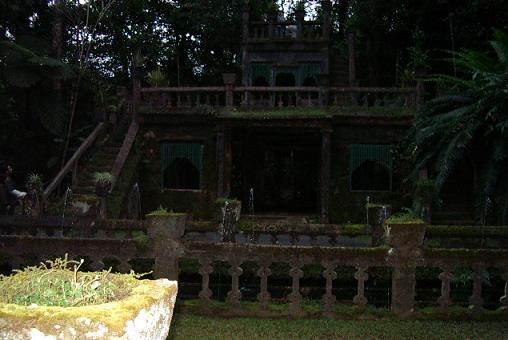
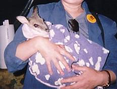

続きを読む
続きを読む


なんとか見られそうな画像を載せてみましたが、見えますでしょうか？
これがパロネラ城です。
フラッシュが焚けてしまって手前の石器だけが白っぽく浮き上がっておりますが、今は雑草がわらわらと生えているこれは、お城の園灯としてかっては火が灯されていたものなのか、植木鉢として使われていたのかちょっと判断がつきかねますが、その向こうにある噴水の柵や二階部分の手すりにも使われているものに、同じように土が入って雑草が育っているところを見ますと、植木鉢のようにも思われるのですが、添乗員さんに聞いたわけではないのではっきりとはわかりません。
城の左側の階段から２階部分に上がることができ、更に２階の小部屋の上にある屋上（？）にも登ることができるようで、Tさんがカメラを構えている間、いつまでも居座っていた若いカップルは木立の影に溶け込んでひっそりと寄り添っています。（＾。＾；
「だみだ こりゃ！」
と、人気のない城を写したかったTさんもとうとう若者たちに根負けし、私たちはすごすごと退散いたしました。
集合場所になっている売店へ行き、当たったアイスクリーム券を差し出しますと、６種類くらいの中から好きなものが選べるそうで、Tさんは迷わずミント入りのものを選び、私は迷った挙句アーモンドとチーズの入った物に決めました。
むふふぅん
ロハで食べられるのだと思うと美味しさも倍増！
夕食前にデザートを食べるというのはちょっとルール違反かもしれませんが、大人になると予備の胃袋ができて、アイスクリームの一個くらい入るところが違うから大丈夫なんですよん（＾０＾；
美味しいアイスも食べ終わりまして、しばらくすると、「集合！」の声がかかり、以前は教会だったという細長い建物内へ案内されると、網の上に乗せられたお肉がじゅわじゅわと焼かれており、いい匂いをさせています。
前もってバスの中で選択しておいたメインディッシュ（牛、鶏、魚のどれか一品）の乗っているトレイを持ってそれぞれに席に着き、モグモグとやっていますと、添乗員さんがタオルにくるまれた何かを持ってやって来ました
「なんだろう？」
食べ物を口に運ぶ動作は休めずに目と耳だけはそちらに向けていますと、ワラビーの赤ちゃんがタオルの間から顔をのぞかせて抱かれています。

「わあー、可愛い!!」
ついさっきまで聞こえていたお皿に触れるナイフやフォークの音がぴたり！と止んで、人々の視線が一斉にワラビーに注がれ、中には食事を放り出して走り寄る人も出てきたり…
ワラビーというのは小型のカンガルーで、大変おとなしい性質なのでペットとしても飼うことができるのだそうですが、野生であったこのワラビー親子は不運にも交通事故にあってしまい、お腹のポケットの中にいたこの子だけは助かり、タオルの袋をお母さんのポケット代わりにここパロネラパークで大切に育てられているそうです。
食事が終わってから抱かせて貰って写真を撮ることができましが、まあるい目をきょときょとさせておとなしく抱かれている愛らしさに、そのまま抱いて帰りたくなったのは私だけでしょうか？
「ワラビーを抱いたから、コアラはもういいや」
ついでに、翌日の予定になっていた「コアラ抱っこ」もパスすることに決めました。（＾ｍ＾；
ワラビーとの記念写真撮影が終わると再び売店に戻って、それぞれにペンライトを手渡され、用意されていた虫除けスプレーをシュッ！シュッ！と降りかけて、いよいよ夜のジャングル探検へ出発です。
真っ暗な密林の中を小さなペンライトの灯りで足元を照らしながら、赤い色の懐中電灯を持った添乗員さんの後に付いてぞろぞろと歩いて行きますが、昼間はなんとも感じないですたすたと歩けた道が、なんとデコボコしているものか、自分の足元のほんのわずかな空間だけしか見えないところを歩くということは、こんなにも不自由なことなのかと思い知らされる経験で、自分の目で見えるということの有難さを実感しました。
ペンライトの明かりが届かないところはまったくの闇で、本能というものはそんなわずかな間にも働くものなのか、見えない部分が多い分だけ耳が活動を始め、何もかもが見えていた昼間には聞こえなかったかすかな物音が耳に入ってくるのか、時折誰か彼かのライトが右や左の闇の中へ向けられ、思わずそちらに目が行ってしまいます。
「いた!!」
誰かが発したこの一言で、ツアー客は狩猟族に豹変しました。
「どこ？ どこ？」
「あっちだ！」
「こっちだ！」
と、まるで獲物を探すがごとく吹き矢ならぬペンライトで追い掛け回されるものですから、動物だって恐ろしくてじっとしているはずもなく、残念ながら私は見ることができませんでしたが、小さなねずみのようなものだったそうです。
それからしばらく進んでいくと、明かりを消すように言われ、
「絶対に明かりをつけないでください！」
と念を押されて、添乗員さんの持っている特殊な赤いライトだけになりましたが、いくらか目が慣れてきていたようでなんとか歩いて行けます。
通路の右に左に赤いライトが向けられ、添乗員さんが何かを探しているのがわかりますが、いったい何を探しているのか私たちにはわかりませんので、ライトの動きにあっちを見たりこっちを見たりしながら前へ前へと進んでいきますと、ある地点で添乗員さんが止まったようで、赤いライトが動かなくなりました。
なにがいるんだろう？
ライトの近くでは小さな歓声が上がっており、列の後ろの方にいた私たちからは何も見えないので、添乗員さんがそこから動かないということは何かがそこで寝ているのだろうか？などと想像をめぐらせながら近づいていきますと、地面がぼうーっと青く光っています。
土ボタルです。
日本にいる源氏ボタルなどのように光ったり消えたりはしませんが、ガスコンロの炎のような青い色に地面が光っており、まるで水溜りがあちこちにあるかのように大小いくつかに別れて点在していました。
ニュージーランドに行ったときにこの土ボタルを見に行くツアーがあったのですが、水の流れる狭い洞窟のようなところを通って行かねばならず、おまけに一日がかりになってしまうということで諦めたのですが、街の中の水族館のようなところで見られるとガイドブックに書いてあったので行ってみましたが、残念ながらそれらしき物はどこにもいなくて、
「詐欺ジャン」
とばかりに写真だけ見てきたのですが、その姿は明るいところではあまりお目にかかりたくないような黒くて細長い虫でした。（＾ｖ＾；
オーストラリアでも見られるところが少なくなったそうで、光っているときに明かりを向けると光らなくなってしまうとのことで、添乗員さんがしつこく注意をしていたにもかかわらず、何人かの人がペンライトの灯りを置き土産にしていくんです。
いるんですねぇ こういう困った人が…
その後、またもや小さな動物に遭遇することができ、大勢でわあわあと追い掛け回して、ぽってりとしたお尻の後姿だけしか見ることができませんでしたが、これもネズミの類で、TVゲームで「クラッシュ バンデクー」というものがありましたが、これの主人公になっているバンデクーという動物だと教えてもらいました。
締めくくりはパロネラ城前の広場に集まって、そこだけぽっかりと穴が開いたように樹木の屋根のない空間で星空の鑑賞会です。
「あれが、南十字星です」
パロネラパークは熱帯雨林に隣接してあるわけで、自然をそのまま残された周りには灯りらしきものはほとんどなく、当然街灯などの設置もない広場から見上げる夜空には、それは見事なクロスをかたどって煌いており、宝石のようにさまざまな色を放つ大小の星々がまるで絵に描いたように散らばっておりました。
そんなこんなで売店に戻ってくると、先ほどのワラビーが紐で吊るされたタオルの袋の中から顔を出して私たちを迎えてくれ、再びつり橋を渡って待っていたバスに乗り込み、ケアンズの街へ帰って来ましたが、私たちはツアー事務所のあるホテルから乗車したので、そのまま同じところに降ろされてしまいそうでしたが、宿泊ホテルで降ろしてもらうようにお願いして無事ホテルに到着いたしました。
作成:2005-04-02
続きを読む